Measurable Impact.
Community-Rooted Progress.
Discover how Appalachian Community Capital connects local knowledge with regional scale—deploying catalytic capital, advancing rural renewable energy, sharing member intelligence, and elevating the voices of Appalachian entrepreneurs.
Verified Regional Impact
We track quantitative and qualitative outcomes across our 46 member CDFIs, 13 states, and 423 Appalachian counties to ensure capital reaches underserved communities with maximum leverage.
Member Survey Findings • 2026
Insights from 38 responding institutions across ACC's 46-member network highlight the vital role of community-based lenders in supporting small businesses, revitalizing local economies, and expanding access to capital across Appalachia.
Provide small-business microloans under $50,000, expanding access to financing for local entrepreneurs.
Offer business loans exceeding $100,000, supporting business growth and expansion.
Finance commercial real estate, supporting investment in downtowns, business properties, and community revitalization.
Finance community facilities that support essential local services and infrastructure.
Anticipate needing at least $5 million in additional capital over the next 12–14 months to meet lending demand.
Identify the cost of capital as one of their greatest organizational challenges.
ACC Vision 2030: Mobilizing $250 Million
By 2030, ACC plans to mobilize $250M in catalytic capital to expand economic opportunity, grow resilient local businesses, create family-sustaining jobs, and build lasting community wealth across Appalachia.
Stories of Impact
Authentic success stories, small business spotlights, and regional convenings demonstrating how Appalachian Community Capital and our member CDFIs invest in resilient local economies.

Small Business Spotlight – HandinHand Counseling Services
Small Business Spotlight – HandinHand Counseling Services
Small Business Spotlight – HandinHand Counseling Services
When Tess Kenney founded HandinHand Counseling Services, LLC, she set out to create a space where people could access trauma-informed, culturally responsive care that recognizes every person’s story and journey.
With funding and support from Neighborhood Community Development Fund (NCDF), an ACC network member, Tess is expanding access to individual, family, and group therapy rooted in hope, health, and healing.
HandinHand is more than a growing business. It is helping meet an important need in the community while creating access to services that can make a lasting difference. This is what community investment can look like when entrepreneurs have the resources to turn their vision into impact.

Small Business Spotlight – Cakes Designer Boutique & Academy
Meet Guadalupe Quaranta, founder of Cakes Designer Boutique & Academy in Atlanta, Georgia.
Meet Guadalupe Quaranta, founder of Cakes Designer Boutique & Academy in Atlanta, Georgia.
Originally from Venezuela, Guadalupe turned her 22+ years of baking experience into a thriving business and academy.
With financing from ACE | Access to Capital for Entrepreneurs , an ACC member CDFI, she expanded her kitchen, invested in new equipment, and strengthened her marketing reaching hundreds of students and helping aspiring bakers build businesses of their own.
Her story is a powerful example of what happens when capital meets vision, talent, and determination.
Investing in Hispanic entrepreneurs means investing in stronger businesses, stronger communities, and a stronger economy.

Small Business Spotlight – Future Focus Child Care
Meet Dejuana Smith, founder of Future Focus Child Care in Pittsburgh, Pennsylvania. What began in 2002 as an in-home daycare serving six children has grown into a thriving childcar...
Meet Dejuana Smith, founder of Future Focus Child Care in Pittsburgh, Pennsylvania. What began in 2002 as an in-home daycare serving six children has grown into a thriving childcare center caring for 40 to 70 children. In 2023, Dejuana took another major step by purchasing the 10,000-square-foot building that houses her business.
As an ACC member, Neighborhood Community Development Fund (NCDF) provided flexible financing and ongoing support when Dejuana needed capital to renovate and fully utilize the building’s second floor. Today, she rents the space to another daycare provider and a therapist, expanding access to services and creating additional opportunities in the community.
“Denise has been nothing but a blessing for me,” Dejuana shared. She also added, “I’m still learning as an entrepreneur, so I appreciate all the services you provide to help with that.”
Stories like Dejuana’s show the impact of ACC’s 46-member network, where CDFIs provide more than capital. They provide the guidance, relationships, and support entrepreneurs need to grow their businesses and create lasting community impact.

Small Business Spotlight – Foundations Total Care
Meet Te’Aira Mallory, founder of Foundations Total Care in Union, Ohio. Driven by a passion for helping others, Te’Aira built her company around providing personalized, compassiona...
Meet Te’Aira Mallory, founder of Foundations Total Care in Union, Ohio. Driven by a passion for helping others, Te’Aira built her company around providing personalized, compassionate care for individuals and families, including those in the IDD community.
With support from ECDI, an ACC network member, Te’Aira received financing, business training, and guidance that helped her expand her services. Foundations Total Care has grown from serving clients in Dayton to providing care across all 88 Ohio counties.
Te’Aira’s journey is a powerful reminder of what can happen when entrepreneurs have access to both capital and the support needed to turn their vision into lasting impact.
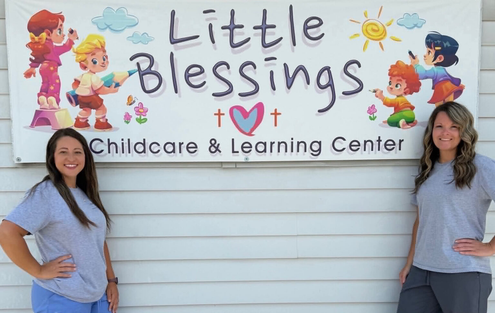
Small Business Spotlight
Small Business Spotlight
Small Business Spotlight
David Zoll’s journey with Acoustic Corner began as a part-time job. Twenty years later, he owns both the business and the building in Black Mountain, North Carolina. What started as a role working 25 hours a week grew into ownership of a community staple that has served the area for 25 years.
When David was ready to take over Acoustic Corner, Mountain BizWorks, an ACC network member, provided the business loan that helped make ownership possible. Mountain BizWorks also connected him with classes, workshops, and support that gave him the confidence to take the next step. In 2023, David returned to Mountain BizWorks and secured financing to purchase the building.
“There’s enough challenges running a small business day to day, but when you own the building and you’re not subjected to a lease, to have that peace of mind is instrumental, without a doubt,” David shared.
Stories like David’s show the impact of ACC’s 46-member network, where CDFIs provide entrepreneurs with the capital and support they need to build lasting businesses and strengthen their communities.
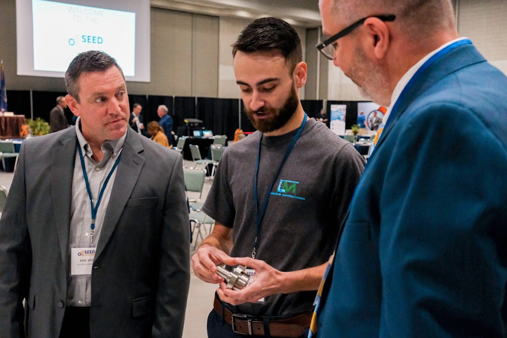
Business Growth Spotlight
Business Growth Spotlight
Business Growth Spotlight
What started with a 20-year-old entrepreneur buying his first piece of equipment has grown into a thriving advanced manufacturing company. Winston Crawford founded Limestone Manufacturing LLC in Somerset, Kentucky, turning his skills in automation and manufacturing into a growing business.
Through the SEED Contracting Symposium, presented by ACC network member SKED , Winston connected with industry representatives, contractors, and potential customers. Those relationships helped Limestone Manufacturing expand its reach, gain new customers, and pursue certifications that opened the door to larger contracting opportunities.
“Having a good relationship with SKED is like having a supporter always on your side,” Winston shared. Today, Limestone Manufacturing employs six people and continues expanding its capabilities across the manufacturing and defense industries.
Stories like Winston’s show the impact of ACC’s 46-member network , where CDFIs and community development organizations provide more than capital. They create connections and opportunities that help businesses grow.

Community Impact Spotlight
Community Impact Spotlight
Community Impact Spotlight
When friends Brittany Nelson and Danielle Bowlin saw the need for quality childcare in Williamsburg, Kentucky, they turned their shared vision into Little Blessings Childcare and Early Learning Center.
As an ACC network member, SKED provided the financing they needed to remodel the center and purchase the furnishings necessary to open their doors. Today, Little Blessings serves 38 children and employs 12 staff members, helping provide families in Whitley County with quality childcare and early learning opportunities.
“Our experience working with SKED has been wonderful,” Brittany shared. From financing to guidance throughout the process, SKED helped turn their vision into a growing community resource.
Stories like Little Blessings show the impact of ACC’s 46-member network , connecting entrepreneurs with mission-driven CDFIs that provide the capital and support needed to strengthen communities.
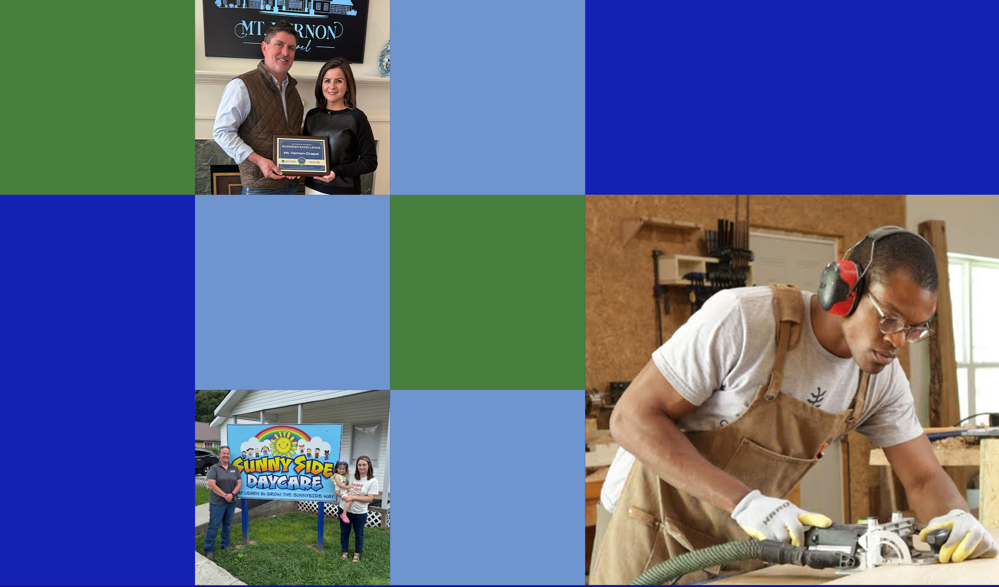
Strengthening Small Businesses Across Appalachia: ACC and Truist Foundation 2025 Impact Report
Appalachian Community Capital is proud to share our latest impact report , highlighting the work of our member CDFIs and partners across the 13-state Appalachian region. Supported...
Appalachian Community Capital is proud to share our latest impact report , highlighting the work of our member CDFIs and partners across the 13-state Appalachian region. Supported by a $1.3 million grant from the Truist Foundation, ACC expanded access to capital, strengthened small businesses, and advanced data-driven solutions that help underserved communities thrive. Through this investment, we reached more than 1,000 small businesses with grants, technical assistance, and flexible financial products, supporting women- and BIPOC-owned enterprises, catalyzing job creation, and promoting economic resilience. The Truist Foundation award also funded ACC’s new Data Analytics Hub, equipping CDFIs with tools to better identify and serve underinvested entrepreneurs. We invite you to explore the full report and see how strategic investment and collaboration are driving opportunity across Appalachia.
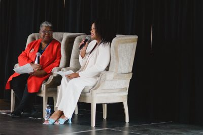
Opportunity Appalachia 2025 Investor Convening Recap content
We were thrilled to welcome over 150 participants, including more than 60 investors from 40 financial institutions, to Asheville, NC, on August 11 – 12, for the 2025 Opportunity Ap...
We were thrilled to welcome over 150 participants, including more than 60 investors from 40 financial institutions, to Asheville, NC, on August 11 – 12, for the 2025 Opportunity Appalachia Investor Convening. Over two days, the in-person attendees made connections, heard pitch presentations from 25 portfolio projects seeking over $250 million in financing, engaged with insightful keynote and panel discussions, and toured local projects. Together, we built momentum for participating communities and the region as a whole, demonstrating the promise of investment in Central Appalachia.
From the very beginning, our opening speakers framed the convening as an opportunity for hope and possibility. Carrie Cook, Vice President and Community Affairs Officer at the Federal Reserve Bank of Richmond, captured the spirit of the convening, saying, “You all give me hope – you are what we are investing in.” That optimism was echoed throughout the two days as investors and alumni project sponsors engaged in candid conversations about the realities and rewards of investing in underserved communities.
The project pitches also left a hopeful impression. Bill Carson, Senior Vice President & Senior Business Development Officer for New Markets & Historic Tax Credits at U.S. Bancorp Impact Finance reflected, “Every one of the projects was inspiring and impactful, and I look forward to keeping in touch with and—hopefully—supporting several.” That excitement was shared widely among investors after hearing directly from project sponsors about their visions and the investments needed to bring them to life. Chimeka Gladney, Senior Vice President, Truist Community Capital noted, “The program highlights high-quality opportunities in communities that may otherwise be overlooked. This is a great venue for investors to come together to identify and share co-investing opportunities.”
For project sponsors, the convening was both a platform and a milestone. Beth Heile, who presented the Old Glory Mill project in Rhodhiss, NC, said, “I was blown away by the Investor Convening – presenting Old Glory Mill in such a special setting, connecting with investors eager to help small towns like Rhodhiss thrive, and seeing the momentum for revitalization. The follow-up conversations are already moving us closer to making it real.”
ACC’s President and CEO, Donna Gambrell, underscored the larger meaning of these exchanges: “Opportunity Appalachia is about more than transactions; it’s about revitalizing communities. What we saw here in Asheville is the power of local leaders, investors, and partners coming together to make that revitalization possible and create new opportunity in Central Appalachia.”
More than 50 participants also joined local project tours, visiting nearby sites including Smith Mill Works, a community business park focused on sustainable small businesses; the Balsam Mountain Inn, a historic restoration of a 48-room Inn nestled atop a mountain; and the West Marion Resilience Hub, a transformation of a former pre-integration school serving the Black community into a multi-racial community services hub. These visits provided a firsthand look at how investment can reshape spaces, fuel small business and job growth, and create inclusive opportunities for the future.
Since 2020, Opportunity Appalachia (OA) has supported 86 projects, collectively seeking over $750 million in financing and projected to create more than 4,300 jobs. To date, more than $150 million has already been raised from a variety of investors including banks, CDFIs, New Markets Tax Credit CDEs, Historic Tax Credit investors, impact investors, Opportunity Zone QOFs, philanthropies, and public lenders and grantors. The 2025 Investor Convening built on that momentum, reminding participants that rural and small-market projects are not only investable, they are vital to the economic future of Central Appalachia. The OA Impact Report is available here , and the 2025 Project Portfolio is available here .
About Appalachian Community Capital (ACC)
Founded in 2013, Appalachian Community Capital (ACC) is a Community Development Financial Institution (CDFI) serving member CDFIs across the 13-state footprint of Appalachia with a mission to increase small business lending across this underserved and primarily rural region. By providing capital, capacity building, and innovative programming to its members, ACC catalyzes entrepreneurship, opportunity, and growth in distressed communities. ACC has over 45 members who manage over $4 billion in total assets. Investors and supporters of ACC include: the Appalachian Regional Commission, US Treasury CDFI Fund, the Ford Foundation, Goldman Sachs, Bank of America, Truist, US Bank, Wells Fargo, Benedum Foundation, Dogwood Health Trust, Mastercard Foundation, and many others.
Opportunity Appalachia is a program of ACC.
Below are select photos from the event; more can be explored here .
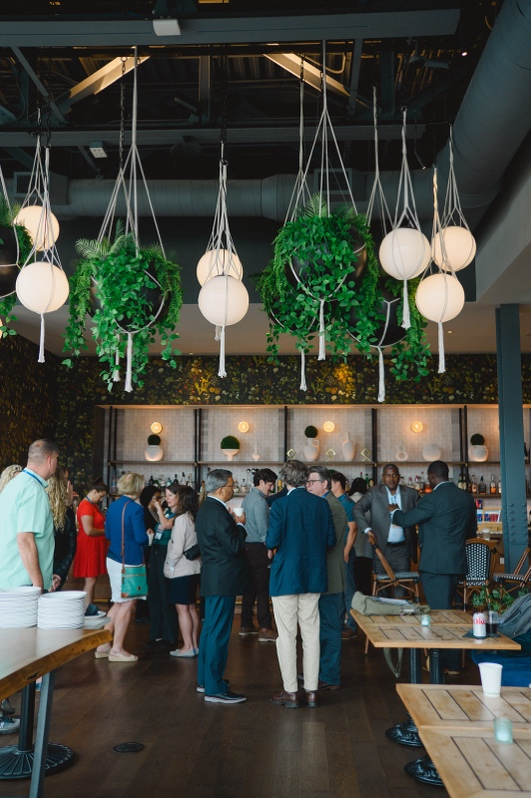
Opportunity Appalachia 2025 Investor Convening Recap Photos
Participants connect during the evening reception
Participants connect during the evening reception
Carrie Cook (right), Federal Reserve Bank of Richmond, and Donna Gambrell (left), Appalachian Community Capital, discuss investing in rural communities during the Fireside Chat.
(left to right) Lamont Price, TN Economic and Community Development, Erica McGilley, Partner Community Capital, Chimeka Gladney, Truist Community Capital, and Andrew Crosson discuss the commitment and mindset necessary to shepherd projects across the finish line in underserved areas
Beth Heile, Burke River Trail Association, presenting the pitch for the Old Glory Mill project in Rhodhiss, NC.
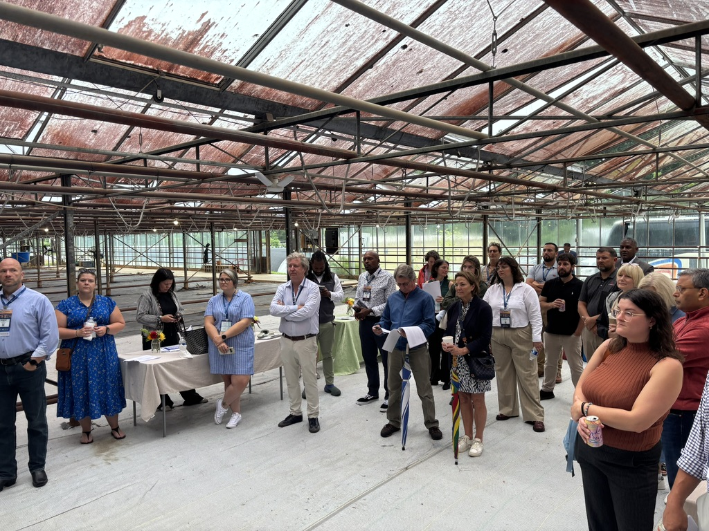
2025 Opportunity Appalachia Investor Convening Photos
2025 Opportunity Appalachia Investor Convening Photos August 2025 We were thrilled to welcome over 130 participants, including more than 60 investors from 40 organizations, to Ashe...
2025 Opportunity Appalachia Investor Convening Photos August 2025 We were thrilled to welcome over 130 participants, including more than 60 investors from 40 organizations, to Asheville, NC for the 2025 Opportunity Appalachia Investor Convening. Over two days, attendees connected, heard pitch presentations from 25 portfolio projects seeking over $250 million in financing, engaged with insightful panel discussions, and toured local projects.
Below, you can explore the photos from the event, capturing its energy, collaboration, and momentum. By Appalachian Community Capital CDFI | 2025-08-22T13:18:33-04:00 August 21st, 2025 | Blog |
Archive
View Archived Stories of Impact (Prior to 2025)
Assisting Diverse Small Farms And Non-Profits Under Kentucky’s Soar Program
In October 2023, Kentucky Highlands Investment Corporation (KHIC) was awarded a $50,000 grant from Appalachian Community Capital to further support the SOAR ((Shaping Our Appalachi...
In October 2023, Kentucky Highlands Investment Corporation (KHIC) was awarded a $50,000 grant from Appalachian Community Capital to further support the SOAR ((Shaping Our Appalachian Region) Small Farm Loan Fund. The focus of the award is to increase emphasis on providing resources to woman-owned and minority-owned farmers through dedicated technical assistance and financing to support their ventures. Of the grant amount, a total of $45,000 was to be used for lending and $5,000 was designated for KHIC to bring our technical assistance resources to agricultural borrowers. KHIC made seven loans. Six of these were to women-owned businesses/farmers and one was with a non-profit supporting persons of color heritage and programs. The loan amounts were up to $7,500 at a fixed interest rate of 1% for a term of five years. Each of the loans was in a different KY county, illustrating the widespread need for this type of financing
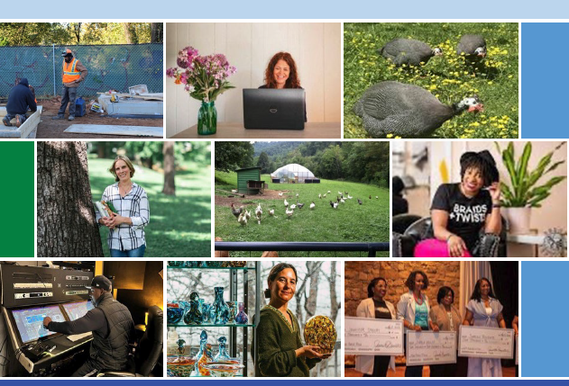
The Power of CDFIs and Small Businesses
A grant from the Truist Foundation has enabled ACC members to provide critical support for diverse small businesses in Appalachia as they continue to navigate through the effects o...
A grant from the Truist Foundation has enabled ACC members to provide critical support for diverse small businesses in Appalachia as they continue to navigate through the effects of a global pandemic.
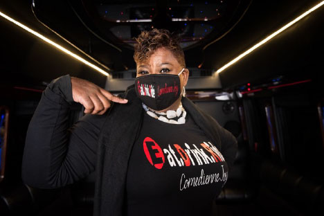
enJOY Entertainment, LLC
Loan Closing Date : 05/04/2022 Funding Source : ACC Loan Amount : $63,169 Location : Birmingham, AL
Loan Closing Date : 05/04/2022 Funding Source : ACC Loan Amount : $63,169 Location : Birmingham, AL
The small business enJOY Entertainment, LLC is a restaurant tour provider in Birmingham, Alabama. Operating as Eat.Drink.Ride.Food Tours, owner Cassandra “Joy” King introduces her guests to great local restaurants by way of her tour bus. Joy provides her guests with a great opportunity to come together for birthday celebrations, bachelorette parties, corporate events, and various other private gatherings.
Ms. King was raised in Mobile, Alabama and received a Bachelor of Arts degree in broadcasting from Auburn University at Montgomery. The idea to start her company sprouted from her activities as a radio host, interviewing local restaurateurs and creating food blogs. As a food blogger and TV host, she would feature new restaurants, quirky dining spots, and food festivals in Alabama.
Ms. King received financing from Sabre Finance, an ACC member and CDFI located in Birmingham, AL to purchase and rehabilitate three tour buses. Sabre used proceeds from Appalachian Community Capital for some of the financing.
After being introduced to Sabre Finance, Ms. King demonstrated the viability of her business idea by inviting a team member from Sabre Finance on a food tour. After providing her guest with a wonderful experience, she was approved for a loan to finance her very first food tour bus.
WHY THIS PROJECT MATTERS
Funding for enJOY Entertainment, LLC was important because the pandemic had a negative economic impact on restaurants in Birmingham. Ms. King has worked to sustain business relationships with each restaurateur she chooses for her Eat.Drink.Ride.Food Tours. She is happy to share that her food tour business has become a reliable source of business for local restaurants, and she is very happy to provide memorable experiences for her food tour guests.
“Sabre Finance is the reason that my company is afloat, the reason I have a company today.” –
–Cassandra “Joy” King
Getting Rural Projects Ready for Investment
Donna Gambrell, Appalachian Community Capital, Ray Daffner, Opportunity Appalachia
Donna Gambrell, Appalachian Community Capital, Ray Daffner, Opportunity Appalachia
For Opportunity Exchange
At Opportunity Appalachia, we are working with a group of 16 projects in rural Central Appalachia (OH, VA, and WV) to provide technical assistance and structure financings with social and financial returns, bringing new investment and jobs to hard hit rural communities in federally designated Opportunity Zones.
After a year-long effort to provide design and architectural support, complete market assessments, develop business plans and prospectus, and facilitate investor introductions, 7 projects have identified financing sources and are anticipated to close on +$100M in 2021-22, creating more than 745 jobs in coal-impacted communities. An additional 6 projects are likely to be financed later in 2022 at +$140M resulting in the creation of +270 quality jobs. As part of our efforts to maximize impact, many of these jobs target persons in recovery from substance abuse in our Appalachian coal communities.
These projects were drawn from a group of 42 applicants, and were selected for participation based on factors such as level of community support, anticipated community impact, and sponsor capacity. In all cases, the selected projects were missing critical components required to move forward, but all had substantial promise to transform their communities.
Participating communities include places like Chillicothe, Ohio (population 21,700), Galax Virginia (pop 6,700), and Grafton, West Virginia (pop. 5,000) – promising places overlooked by conventional financial institutions. The participating projects support manufacturing facilities, downtown development, tech business, agricultural facilities, hotels / housing, broadband deployment, and retail enterprises, and are particularly important at this challenging time as local economies look to restart as public health concerns resolve.
To advance these local efforts we assembled project technical assistance (TA) teams that worked with each community to address identified gaps. The teams were composed of local, regional, and national TA providers, and included market research groups, state-wide architectural and engineering firms, regional CDFIs for financial structuring support, specialized consulting groups focused on select industries (broadband, recreation, agriculture …), and leading national development organizations (e.g. National Development Council).
In addition, Main Street America (a preeminent national downtown development organization) and Coastal Enterprises Inc (a prominent national rural development CDFI) served on our program Steering Committee as national partners, providing invaluable guidance throughout the process.
As we undertook our TA work, we outreached to over 40 private investors and federal and state agencies, facilitating investor access that was otherwise unavailable to our rural projects. Presentation of pre-vetted projects to specific investors with a strategic fit, and providing highly visible access across multiple platforms – e.g. the Federal Reserve Bank Investment Connection, Opportunity Exchange, CDFA, and our Opportunity Appalachia sponsored Investor Convening pitch event – were important to successfully reach, and create credibility with, the investor community. As a result, participating projects have identified financing from a diverse range of sources including OZ QOFs, NMTC CDEs, HTC investors, CDFIs, banks, and federal agencies.
Some lessons learned include:
1. Stay close to the community – our program Steering Committee is composed of leading development groups in the target states with strong local relationships, which were essential to both assess local capacity, and to address challenges as projects progressed.
2. Investor participation is a full contact sport – Our ongoing outreach, institutional partnerships, and vetted portfolio provided both visibility and credibility for projects in rural communities often overlooked by the investor community.
3. Fill the gap – We worked with a group of 40 for-profit and non-profit TA providers through an RFQ process to support high quality multi-disciplinary teams to address the identified needs required to move each project forward.
4. Rethink / re-strategize when needed – when several projects hit roadblocks, we worked with communities and their TA teams to rethink the opportunity, which sometimes resulted in projects with additional sources of equity (e.g. NMTC), or downsized and phased projects that better fit available cash flows.
5. Focus on impact – when in doubt, keep the eye on the goal; transformative projects that catalyze change in low wealth communities. Using impact as our north star enabled decision making that cost effectively used / reprogrammed our resources – and identified additional resources – for maximum community benefit.
More information on Opportunity Appalachia is available on our Opportunity Appalachia program page.
View Opportunity Appalachia projects in our 2025 Portfolio Summary (PDF).
Opportunity Appalachia is a Forbes Opportunity Zone 20 Catalyst, which denotes a top national example of community-focused efforts to revitalize distressed communities. Opportunity Appalachia is supported by a $1MM POWER grant from the Appalachian Regional Commission with additional support from the Benedum Foundation, and is managed by Appalachian Community Capital, a 24-member CDFI intermediary whose members and their affiliates manage over $1 billion in assets supporting economic development in Appalachia.
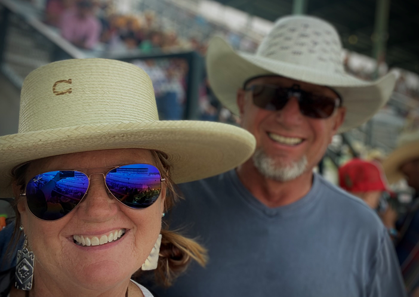
Tim Tam Logistics
Loan Closing Date: 1/28/20 Funding Source – ACC: $15,000 Total Loan Amount: $15,000 Location: Abingdon, VA
Loan Closing Date: 1/28/20 Funding Source – ACC: $15,000 Total Loan Amount: $15,000 Location: Abingdon, VA
Tim Hoss has been driving trucks for various companies for over 40 years and hauls everything from scrap metal to large support beams. While Tim runs the heavy equipment and spends long hours on the road, Tammy Hoss oversees the administrative side of the business to keep things running smoothly. Most recently Tim and Tammy have been working to transport circuit breakers across the United States and Canada ensuring that people have access to electricity.
With fewer truck drivers on the road each day, Tim and Tammy play an important part in the supply chain that affects the local, national, and global economies, all originating from their home in Abingdon, Virginia. Although trucking is the bread and butter of the business, Tim Tam Logistics is more than your average company. Tim and Tammy take pride in the fact that they offer their employees training and the chance to purchase their very own truck to open a trucking company of their own. Tim and Tammy embody the hardworking and giving spirit of Appalachians. When they started their own company, Tim and Tammy had only one truck and they were not even sure how often they would be able to get paid.
People Incorporated and Appalachian Community Capital provided the financing to help Tim Tam Logistics purchase two used trucks at profitable prices and several dump trucks. This project was designed to support small businesses, and People Inc. has helped succeed in that goal. Tim Tam Logistics was able to purchase enough equipment and expand their business in a smart and lucrative manner.
Funding for Tim Tam Logistics was important because trucking impacts the lives of every person in this country and in many other nations as well. With this funding, Tim Tam Logistics has been able to continue to employ their additional driver who may one day own his own trucking business. Tim and Tammy are also expanding their business and looking to hire an additional employee for more local jobs utilizing their new dump trucks. The COVID 19 pandemic has certainly spotlighted just how important logistics and supply chains are to each and every one of us, Tim and Tammy Hoss are both key players in that supply chain and for that, we can all be thankful.
“People Inc. is named right, they help people…the small-town folks.” – Tim Hoss – President
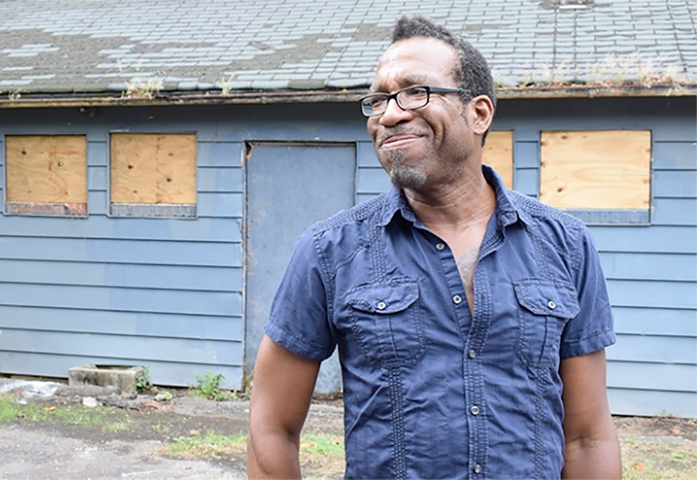
Sound Space
Loan Closing Date: 6/15/18 Funding Source – ACC: $200,000 Total Project Amount: $585,000 Location: Asheville, N.C.
Loan Closing Date: 6/15/18 Funding Source – ACC: $200,000 Total Project Amount: $585,000 Location: Asheville, N.C.
Asheville, N.C. has one of fastest growing music scenes in America with several dozen venues and live acts performing every night of the week. But musicians have a hard time finding rehearsal space. Enter Claude Coleman, Jr., drummer for the alt-rock band Ween, and his business partner Brett Spivey. Together, they’re creating Sound Space, LLC, a recording studio and practice space that will breathe new life into Rabbit’s Motel, which was the only lodging available to touring Negro Southern League baseball players and other African-American visitors to Asheville during Jim Crow, and home to a popular soul food café.
NCIF is providing Sound Space with a loan to renovate the building. Once completed, Sound Space will sell new and used musical equipment, rent practice space, and coordinate lessons and workshops. A local chef (and relative of the original Rabbit’s owners) will open a new soul food café on site. The project will also feature a gallery to commemorate the baseball players who stayed at Rabbit’s Motel during segregation.
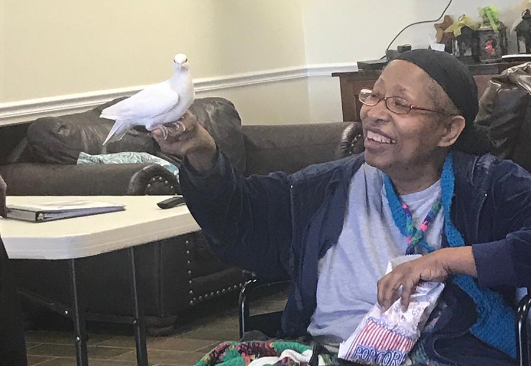
Horizon Adult Health Care
Loan Closing Date: 5-28-18 Funding Source – ACC: $50,000 Total Project Amount: $300,000 Location: Kentucky
Loan Closing Date: 5-28-18 Funding Source – ACC: $50,000 Total Project Amount: $300,000 Location: Kentucky
In 1994 Kelly Upchurch saw a need in rural Kentucky. Families were faced with the following tough decisions when their elderly loved ones lost mobility: (1) leave the job market to provide care, (2) rely on a home health service that provided too few hours of care, (3) spend a fortune hiring someone full-time, or (4) send their family member to a nursing home where the average life expectancy is 8 ½ months. Born and raised in Kentucky, Mr. Upchurch saw an opportunity to extend Kentucky’s culture of taking care of their own to caring for elderly community members by building the first adult day centers in rural Kentucky. Horizon Adult Health Care has been serving Kentucky’s elderly since 1996 when Mr. Upchurch launched his vision.
Nearly two decades later, with 12-day facilities throughout rural Kentucky, the results are outstanding. Two hundred and seventy-five full-time staff serve 1,500 patients a day, including with the attendant care program they added 4 years ago. Patients spend on average 2 ½ extra years of life in an adult day community, cut their daily medications in half and visit with friends old and new.
Patients are picked up at their homes in wheelchair adaptable vans and attended to in a community space that is designed to feel like a living room with trained staff including nurses and prescription specialists. The facility goes beyond providing for the health and safety of patients, encouraging them to take up activities they used to enjoy but may no longer be doing, and going out to community events or to lunch together. These benefits come at a third of the cost of a nursing home facility.
It was after so much success in rural communities in Kentucky that a new opportunity came along for Mr. Upchurch and Horizon Adult Health Care. An adult day health care center was for sale in Madison County, KY, where there was an enormous need. Located a couple of blocks away from low-income housing, the neighborhood had a high density of poor, elderly community members isolated by their frailty in spite of their close proximity to each other.
In May 2018 Mr. Upchurch received a loan from Appalachian Community Capital and Kentucky Highlands Investment Corporation for a total of $300,000 to upgrade the facility they had purchased to provide a Horizon Adult Health Care facility to serve this community. The center will add an estimated 45 jobs to the area and serve an estimated 150 community members.
Applying our desire to serve in a highly-populated area is going to give us an opportunity to really show what we can do and be able to serve more people than we ever really dreamed of. ” Kelly Upchurch – President & CEO
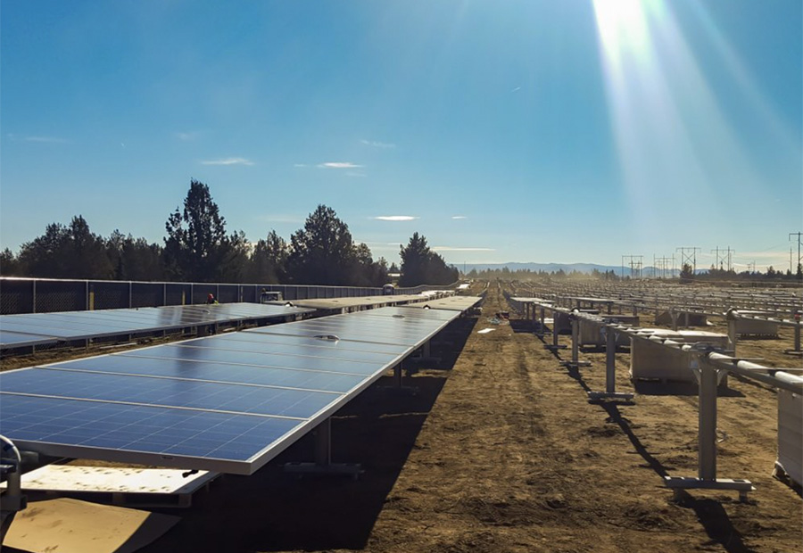
Secure Futures LLC
Loan Closing Date: 7-12-17 Funding Source: ACC Loan Amount: $2,300,000 Location: Christiansburg, VA
Loan Closing Date: 7-12-17 Funding Source: ACC Loan Amount: $2,300,000 Location: Christiansburg, VA
Secure Futures LLC is a Virginia company specializing in the construction of solar energy projects at tax-exempt entities such as hospitals, churches, and local school districts. The company is formerly known as E2C Solar.
Through Appalachian Community Capital, Virginia Community Capital (VCC) provided a loan to Secure Futures to build a 1.3-megawatt solar farm for the Carilion New River Valley Medical Center in Christiansburg, Va. Made in America, this ground-mounted solar project includes approximately 4,000 panels that are used to generate nearly 20 percent of the hospital’s annual energy requirements. The panels have a lifespan of up to 45 years and a 25-year warranty, along with an online dashboard where the public can view data from the solar farm in real-time.
Carilion is the first solar-powered hospital project in Virginia and will decrease the organization’s carbon footprint by 3.2 million pounds of carbon dioxide per year. The project will generate 17 percent of the hospital’s electricity requirements, enough to power the equivalent of 157 homes for an entire year. This project adds vital economic development to Southwest Virginia and will also save the hospital nearly $3.5 million in energy costs over the life of the system, which will allow the money to be spent in more meaningful ways – such as patient care. In addition to saving energy, the solar farm is also doubling as a sheep pasture, increasing the economic output of the farmland.
“We are proud to partner with Virginia in their first solar-powered hospital. This is the beginning of a movement that will create an impactful change for more environmental conservation.” ~ Don Macke, Co-founder
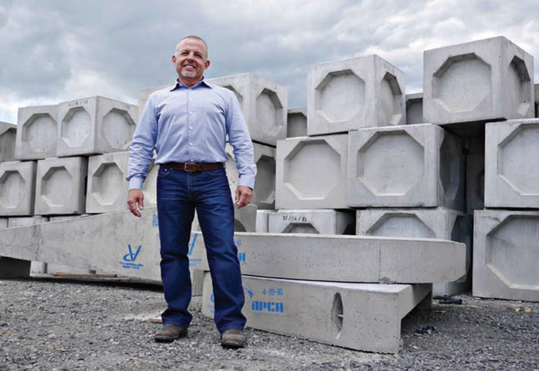
VANHOOSECO™ Precast Concrete
Loan Closing Date: 5-28-15 Funding Source – ACC: $2.3 Million Loan Amount: $2.3 Million Location: Loudon, TN
Loan Closing Date: 5-28-15 Funding Source – ACC: $2.3 Million Loan Amount: $2.3 Million Location: Loudon, TN
Entrepreneurs think big. They dream, plan, and execute strategies to build and sustain thriving businesses. Jeff VanHoose is one such entrepreneur. His business, VANHOOSECO™ Precast Concrete, started small but scaled quickly following the 2008 Great Recession, as it added new divisions and took on new opportunities across the Southeast.
To successfully maintain and fund this growth VanHoose needed a financial partner. Pathway Lending , together with Pinnacle National Bank, was able to be that partner. Pathway Lending provided the financing needed to purchase cutting-edge equipment and double the size of VANHOOSECO™’s Loudon County manufacturing facility.
“I have to say that Pathway Lending was easy to work with,” said VanHoose. “They took the time to understand my opportunities and financial needs. We worked together to build my business for the better.”
Pathway Lending’s partnerships, whether with education providers or Tennessee Bankers Association (TBA) member banks, make big things happen in Tennessee. VANHOOSECO™ is proof of that; with 165 employees and a growing number of contracts with Tennessee Department of Transportation, they are building the infrastructure essential to Tennessee’s economic growth and prosperity. With new equipment and expanded facilities, VANHOOSECO™ will undoubtedly continue its strong history of growth.
Adapting to the changing needs of our customers has always been crucial for us. By utilizing cutting-edge technology, made possible through our work with Pathway and Pinnacle, we can offer products that will keep VANHOOSECO™ at the top of our industry for decades to come.” -Jeff VanHoose
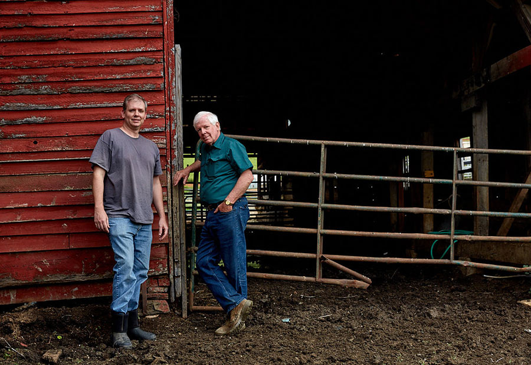
Shipley Farms
Loan Closing Date: 1-08-16 Funding Source: ACC: $ 32,00, NCIF: $16,000 Loan Amount: $50,000 Location: Vilas, NC
Loan Closing Date: 1-08-16 Funding Source: ACC: $ 32,00, NCIF: $16,000 Loan Amount: $50,000 Location: Vilas, NC
In 2013, at 101 years old, R.G. Shipley came out of retirement to launch a start-up with his son and grandson, Bob and Gray Shipley. He had been in the cattle raising business with his family since 1929, when he inherited a 150-acre farm from his uncle; he retired from the business at 90 years old. In recent years, the Shipley farmland had become extremely valuable to developers, and so the Shipley family formulated a plan to maximize its value as a working farm and make sure the land was preserved.
Three generations of the Shipleys–grandfather, father, and son–set about to combine time-honored cattle raising expertise with a business model that responded to the demand for high-quality, pasture-raised beef. The family came up with a new twist on their historic farming work. The Shipleys built a brand of packaged beef products around their tradition of “no short cuts” farming; that is, pasture-raised cattle free from added hormones, steroids and antibiotics. Shipley Farms opened up their premium retail brand to other local farmers so that the farmers can get a price that honors their cattle farming methods without having to spend every Saturday at the farmer’s market.
“There’s that feeling when you get out on the farm [with a] barn [that] was built in the 1860s…there is just that length of time and history. You couldn’t spend time around granddad and grandmother and not have this feeling that there’s a special history here…there’s a right way to do things that we just ought to stick to…There are more and more people that are wanting that opportunity to connect with where their food comes from. It’s important and there’s value in it.” – Gray Shipley on the motivation to build a retail model around sustainable cattle farming practices.
R.G. Shipley passed away at 103 years old, just a couple of years into his start-up; nevertheless the impacts of his work continue. Shipley Farms currently sells beef to high-end restaurants, specialty butcher shops, and online as gifts for special occasions. Sales and revenue have grown steadily. The Shipley brand has supported a half dozen farmers in the area. By creating an innovative, prosperous, farming business in the community, Shipley Farms has not only held off developers, but it has preserved its historic place as a trading post site for the western part of Watauga County.
As they sought the loan money they needed to grow their promising yet capital intensive business, the Shipleys ran into a challenge getting a loan from traditional funding sources to support their growth: by offering packaged beef in addition to raising the cattle, they were operating outside the traditional loan model of using the live cattle as collateral for the bank loan. They needed a bank that could accept packaged beef as collateral.
That’s where Natural Capital Investment Fund came in with a $50,000 loan in 2016, recognizing the value of their model and with the flexibility to respond to their innovative business model with a loan to help them expand their herd and provide for overwintering facilities.
“The support for what we’re doing from you guys and others has been great and not only helpful and beneficial but really critical, and it’s important. Agriculture is tough and expensive and it really does take folks doing what you are doing to be able to sustain it and if that were to go away I think it would be bad for all of us.” ~Gray Shipley on the importance of Natural Capital Investment Fund’s loan assistance.
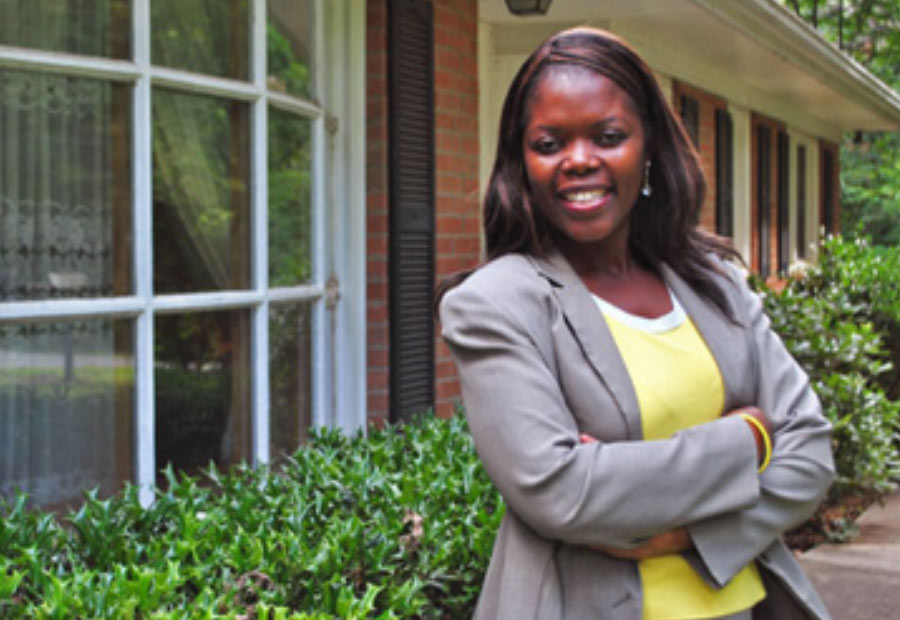
Kay FCH, LLC
Loan Closing Date: 6-06-18 Funding Source ACC: $50,000 Loan Amount: $50,000 Location: Hendersonville, NC
Loan Closing Date: 6-06-18 Funding Source ACC: $50,000 Loan Amount: $50,000 Location: Hendersonville, NC
Kay FCH is a long-term adult care home for the elderly, disabled, and mentally ill. Owner Kudzai Mabunda founded Kay FCH to follow her passion for bettering her community through hands-on social work. Her business provides care for adults allowing them to live independently in a family-like setting. Each Kay FCH home houses six individuals and provides around-the-clock supervision and assistance, wellness programs, as well as companionship to its residents. With the assistance provided by Kay FCH, residents are able to maintain or increase their level of function.
After her success with her first Kay FCH home, Mabunda wanted to expand her business to aid to even more communities throughout Western North Carolina. She approached Carolina Small Business Development Fund hoping to secure capital needed to open more locations. The funding CSBDF provided Mabunda enabled her to renovate two homes in Forest City. These homes will soon become Kay FCH locations, providing adult care for even more communities.
Kay FCH assisted living betters the community by providing care and a home to those who sometimes have no other option. Opening more locations will elevate the business’s positive community impact because increasing capacity allows it to improve quality of life for even more people. The business also provides employment for two individuals, and will soon hire more upon expansion.
“CSBDF gave me another chance as a woman with a small business. The ultimate goal is to continue to grow and be the best adult-care home business in the community.” ~ Kudzai Mabunda
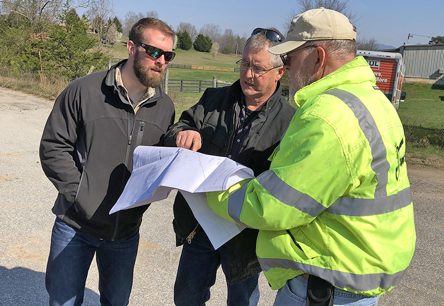
Tantrum Brewing Company
Loan Closing Date: 2-09-18 Funding Source – ACC: $500,000 Loan Amount: $500,000 Location: Cleveland, GA
Loan Closing Date: 2-09-18 Funding Source – ACC: $500,000 Loan Amount: $500,000 Location: Cleveland, GA
Ross Crumpton left his hometown and family in Cleveland, Georgia, a small rural town in the Appalachian mountains, to go to Georgia Tech, quite certain that he would never return to live and work in his hometown. Three years out of college, he had joined the corporate world and moved out of state when he began to think of a dream he and his father, John Crumpton, shared to start a brewery. As the country recovered from the recession and funding became more readily available, Ross and his father began to put plans in to place to start their brewery.
Meanwhile, Ross had been following trends in the brewery world on social media, and noticed that people had started to grow hops in areas of the country not typically known for the crop. Ross suggested to his father that they try growing hops and consider building a farm-to-pint brewery, something no brewery to date had done in Georgia and rare for breweries in the United States. In May of 2017 they planted 20 hops plants, later than they had hoped and with little time to tend to them. Yet the plants flourished in the short season from May to August.
They took their promising results to the Agriculture Commissioner to see if they could get the highly sought after Agritourism and Georgia Grown designation to use on promotional materials and merchandising. The Agriculture Commissioner was intrigued; he was used to seeing peanuts and cotton, but not hops–a crop that had not been grown commercially in Georgia for many years. The Commissioner granted Tantrum Brewery the Agritourism and Georgia Grown designation.
In February and March of 2018, the Crumptons planted 300 hops plants, including five varieties that would complement the styles of beer they plan to brew. The hops yard is adjacent to the brewery site and a soon-to-be restaurant on a five-acre property with long-range mountain views of Mount Yonah.
To build their farm-to-pint brewery, the Crumptons needed a loan for the real estate and equipment required. Tantrum Brewery had received a loan from a local bank on the condition that they bridge their funding gap through investment or through an additional loan. The Crumptons were anxious to be the first to bring their farm-to-pint, Georgia Grown brewery to market, so the timing was vital. That is where ACE came in and was able to move quickly to get them the remaining capital they needed to realize their dream and place them ahead of the competition.
Tantrum Brewery expects to open its doors in December of 2018 and will be hosting food trucks until they have their kitchen ready in the summer of 2019. The Crumptons recruited Master Brewer, David Sheets, previously at Ironmonger Brewery in Marietta , Georgia. Visitors will be able to enjoy locally brewed beer year-round and tour the hops yards from May to August, a part of the beer making process not typically viewed by beer connoisseurs. Tantrum Brewery will provide additional employment opportunities for Cleveland, as well as a new kind of community space for townspeople with few evening dining options.
“They opened their doors… and within about 3 days…we were sitting at their desk talking to them. By that same week–Friday they had an answer….It’s just a great relationship, they’ve been very helpful through the whole process…The timing once we finally got with ACE just was phenomenal. ” Tantrum Brewery Co-Founder John Crumpton on his experiences working with ACE.
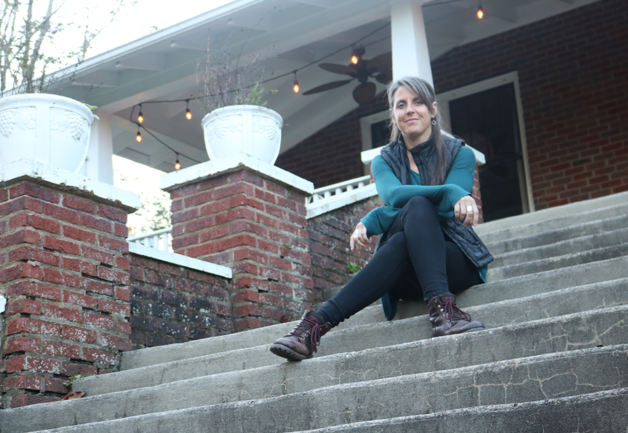
Blue Firefly Inn
Loan Closing Date – 8-25-2015 Funding Source – ACC – $100,000 Total Loan Amount – $300,500 Location – Saluda, NC
Loan Closing Date – 8-25-2015 Funding Source – ACC – $100,000 Total Loan Amount – $300,500 Location – Saluda, NC
The Blue Firefly Inn sits above the quaint mountain town of Saluda, North Carolina, a major cycling route at the foot of the Blue Ridge Mountains. Opening its doors in November of 2016, the Blue Firefly Inn was the first bed and breakfast to cater to the cycling community in Saluda. Owner, Alexis Deal had cycled past the historic Pace property that had sat vacant for years. The Pace residence had been home to one of the original families in the community, and owners of the General Store on Main Street. Ms. Deal envisioned a clean, modern residence, tailored to the needs of the cycling community where people could feel at home while respecting the history of the property and surrounding town.
Ms. Deal decided to purchase the home and bring it back to life with a modern take on a traditional bed and breakfast: provide healthy, locally sourced meals timed around guests’ outdoorsy vacations, optional morning yoga, and collaborate with outdoor adventure groups to provide an active, healthy and restful trip for guests. In order to purchase the property and renovate it with modern design features, Ms. Deal sought a loan from Natural Capital Investment Fund . As a seasoned owner of a successful bakery and an experienced designer, Ms. Deal had the skills to make the Blue Firefly Inn a success, but a background less appealing to traditional banking. NCIF granted her a loan for the total amount she needed, and she was able to bring her vision to life.
“It provides a place that really feels like a clean and nurturing home away from home. It gives families a good place to stay,” said Ms. Deal. ”It’s providing really amazing nutritious food that is seasonal and healthy. It is providing an experience that they wouldn’t have in the community otherwise.”
One and a half years in, Ms. Deal’s business is growing and she is thrilled to see repeat customers returning with their families. She was able to get her home rezoned so she could have a bike shop, Adventure Cycles, collocated on the property. Together they are deepening their connection to the cycling community by launching eBikes and guided tours (great for folks who want to experience the beauty of the Blue Ridge Mountains without the steep climb!). In addition, her inn helps bring people into Saluda to help other local businesses grow and prosper.
“People who stay here eat at the local restaurants and use the local outdoor industry… they go to the river and they go to the zip line. It’s part of bringing people to the community, and it serves everyone here, the gift shops and everybody, to have people staying right here where they are in easy walking distance to everything in town.” – Alexis Deal, Blue Firefly Inn owner, on the impact on Saluda, NC